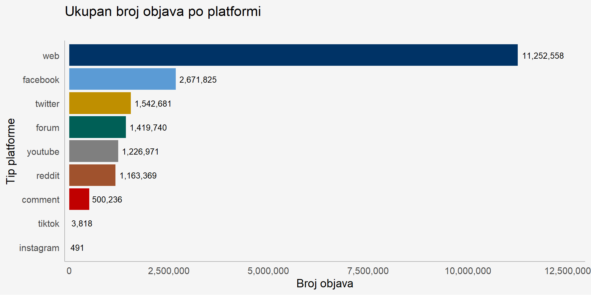
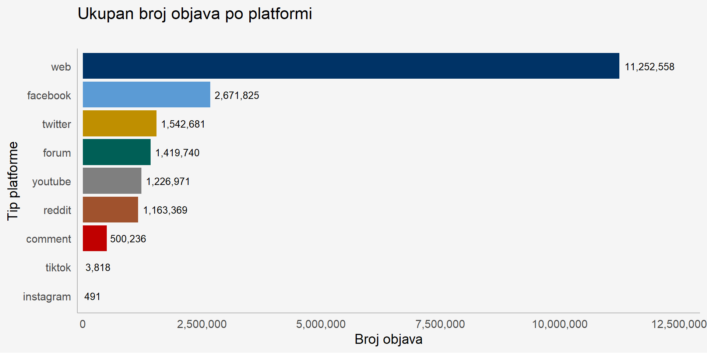
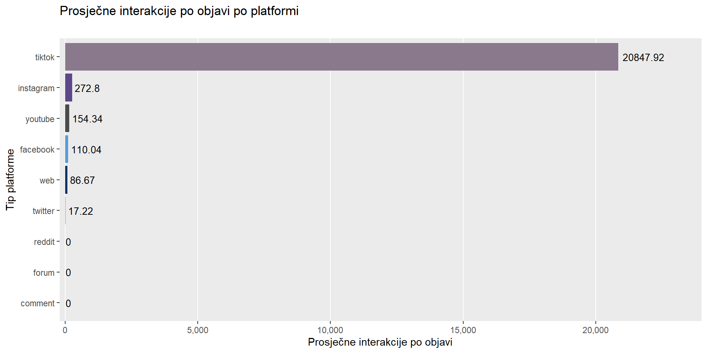

[1] 0
Prijedlog pilot projekta sustava za medijsko praćenje u realnom vremenu
2025-10-08
Digitalni medijski prostor u RH: Definiraju ga politička ekonomija digitalnog klika, prijeđeni put i algoritamska arhitektura javnog diskursa.
Komunikacija središnjih banaka: Značajna promjena od tajnovitosti do transparentnosti (1980e do 2000e), preko komunikacijske revolucije (1990e do ranih 2000ih), do aktivnog angažmana u medijskom prostoru.
Ekonomska literatura: Računalne društvene znanosti i korištenje velikih podataka su standardni u sve većem broju primjena u makroekonomiji i financijama.
Alternativni podatci nisu zamjena nego nadopuna!
Podatci uključuju:
- razdoblje 2021-06/2024-06
- uključuju sve javne objave (N~21mil) u RH
- platforme: web, fb, ig, x, yt i reddit, forum, komentari
[1] 0



Barometar za hrvatsko gospodarstvo u stvarnom vremenu, sličan poznatom indeksu Ekonomske neizvjesnosti (EPU).
Praćenjem učestalosti ključnih riječi vezanih za ekonomsko zdravlje (gospodarstvo, recesija, nezaposlenost) u glavnim hrvatskim medijima, možemo konstruirati robusni, visokofrekventni indeks ekonomskog sentimenta.
Metodologija je fleksibilna i može se proširiti na praćenje različitih sektora:
Financijska stabilnost: Praćenje sentimenta prema bankarskom sektoru ili tržištu nekretnina (
banke,kredit,nekretnine).
Tržište rada: Praćenje rasprava o traženju posla, otkazima i pritiscima na plaće.
Regionalna analiza: Korištenje geolokacijskih podataka za uvid u regionalne ekonomske nejednakosti.
Naš prijedlog je fokusiran, 6-mjesečni pilot za dokazivanje vrijednosti ovog pristupa.
Cilj: Razviti i testirati prototip indeksa sentimenta inflacije u stvarnom vremenu za Hrvatsku.
Opseg:
Vremenski plan:
Po završetku pilota, HNB će dobiti:
Ovaj projekt je dizajniran da bude agilan i visoko kolaborativan.
Ovaj pilot projekt je niskorizičan prvi korak visokog utjecaja za integraciju podataka u stvarnom vremenu u analitički set alata HNB-a.
Dugoročna vizija: Ovo je temelj za sveobuhvatan “nowcasting” sustav, koji poboljšava sposobnost HNB-a da prati gospodarstvo i učinkovito komunicira.
Poziv na akciju:
Kontakt:

Projektni prijedlog za HNB